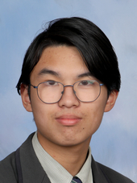
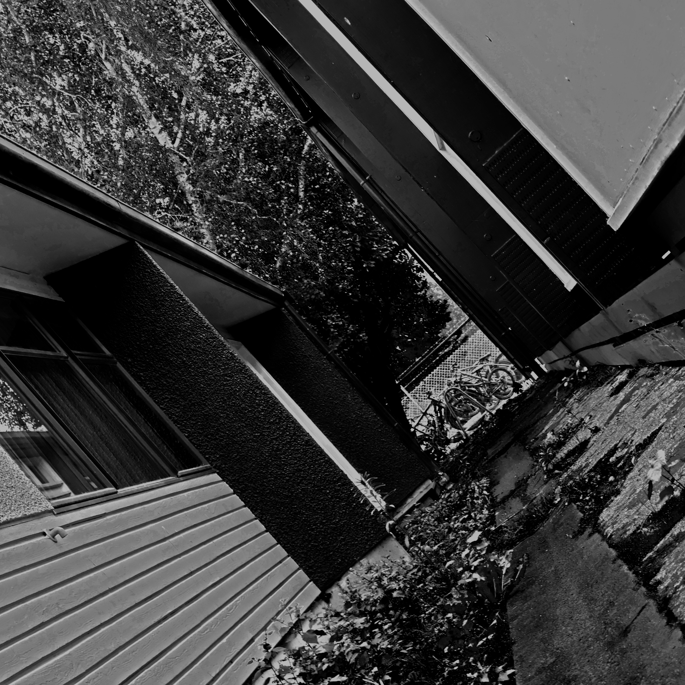
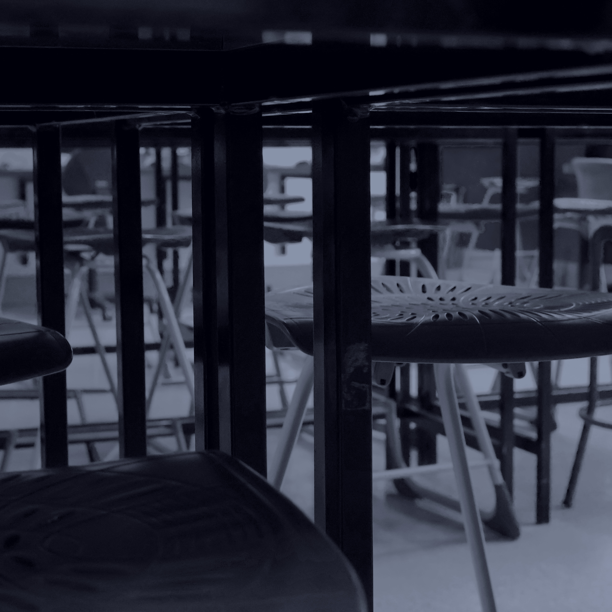

Pronouns: any idc bros
MBTI: INFJ
Favorite fruit: Cucumber
Favorite color: Indigo somewhere around #7169e7
Hobbies: Learning random things, reading, listening to music, procrastination
Ethnicity: Chinese (I mainly speak English but at home I speak Taishanese)
Favorite games: Minecraft, Deltarune, Stellaris, Celeste, Outer Wilds, Portal 2, HSR

